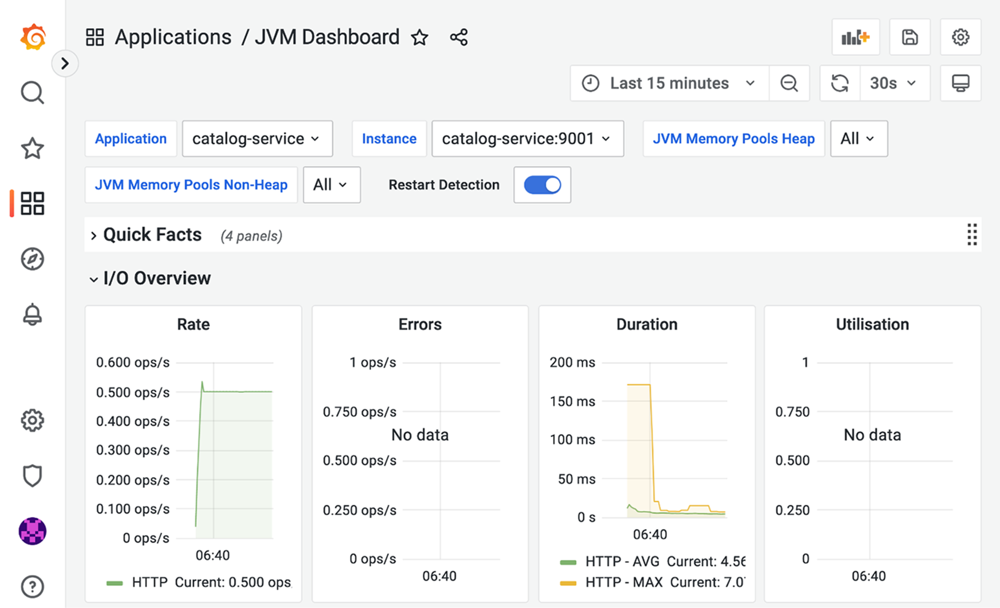
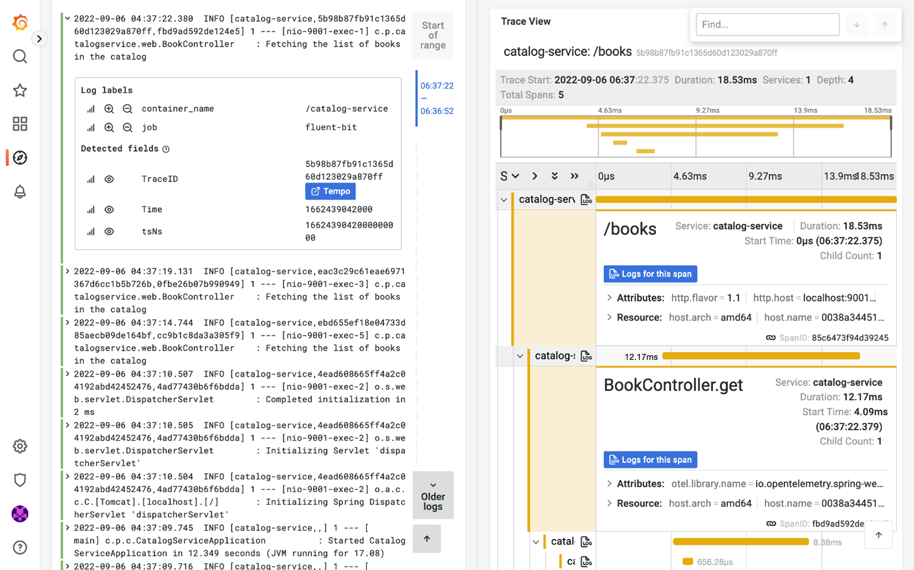

14.3 使用 Kustomize 管理配置
Kubernetes 提供了许多用于运行云原生应用的强大特性。不过，它要求编写多个 YAML 清单，这些清单在实际场景中有时显得冗余且难以管理。在收集了部署应用所需的多个清单之后，我们还面临额外的挑战：如何根据环境修改 ConfigMap 中的值？如何修改容器镜像版本？Secrets 和卷又该怎么办？能否更新健康检查探针的配置？
近年来，人们引入了许多工具来改进我们在 Kubernetes 中配置和部署工作负载的方式。对于 Polar Bookshop 系统，我们希望有一个能让我们把多个 Kubernetes 清单作为一个整体来处理、并根据应用部署环境定制部分配置的工具。
Kustomize（https://kustomize.io）是一个声明式工具，它通过分层（layering）方法来帮助为不同环境的部署配置进行定制。它输出标准的 Kubernetes 清单，并且内置于 Kubernetes CLI（kubectl）中，因此你无需额外安装任何东西。
注意：其他流行的 Kubernetes 部署配置管理选项还有 Carvel 套件中的 ytt（https://carvel.dev/ytt）和 Helm（https://helm.sh）。
本节将展示 Kustomize 提供的核心功能。首先你会看到如何组合相关的 Kubernetes 清单并作为一个整体来处理它们。然后我将展示 Kustomize 如何从属性文件中为你生成一个 ConfigMap。最后，我会引导你完成一系列定制操作，我们将把这些定制应用到 base（基础）清单上，以用于 staging 环境。下一章将进一步扩展这些内容，并覆盖生产场景。
在继续之前，请确保你的本地 minikube 集群仍在运行，并且 Polar Bookshop 的支撑服务都已正确部署。如果没有，请在 polar-deployment/kubernetes/platform/development 下运行 ./create-cluster.sh。
注意：平台服务只在集群内部暴露。如果你想从本地机器访问其中任何一个，可以使用第 7 章中学到的端口转发功能。你既可以借助 Octant 的 GUI，也可以使用 CLI（例如
kubectl port-forward service/polar-postgres 5432:5432）。
既然所有支撑服务都可用，让我们看看如何用 Kustomize 管理和配置一个 Spring Boot 应用。
14.3.1 使用 Kustomize 管理和配置 Spring Boot 应用
到目前为止，我们都是通过应用多个 Kubernetes 清单来把应用部署到 Kubernetes 的。例如，部署 Catalog Service 需要把 ConfigMap、Deployment 和 Service 清单都应用到集群。使用 Kustomize 时，第一步是把相关的清单组合在一起，这样我们就可以把它们作为一个整体来处理。Kustomize 通过一个 Kustomization 资源做到这一点。最终，我们希望让 Kustomize 帮我们管理、处理和生成 Kubernetes 清单。
让我们看看它是如何工作的。打开你的 Catalog Service 项目（catalog-service），在 k8s 文件夹中创建一个 kustomization.yml 文件。它将作为 Kustomize 的入口点。
我们首先要告知 Kustomize，它应该把哪些 Kubernetes 清单作为未来定制的基础。目前，我们将包含现有的 Deployment 和 Service 清单。
清单 14.4 为 Kustomize 定义基础 Kubernetes 清单
apiVersion: kustomize.config.k8s.io/v1beta1
kind: Kustomization
resources:
- deployment.yml
- service.yml
apiVersion：Kustomize 的 API 版本。kind: Kustomization：清单所定义的资源类型。resources：Kustomize 应管理和处理的 Kubernetes 清单。
你可能想知道为什么我们没有包含 ConfigMap。这个想法很好。我们本可以把本章前面创建的 configmap.yml 文件包含进来，但 Kustomize 提供了一种更优雅的方式。与其直接引用一个 ConfigMap，我们可以提供一个属性文件，让 Kustomize 用它来生成 ConfigMap。让我们看看如何实现。
首先，把我们之前创建的 ConfigMap（configmap.yml）的正文移动到一个新的 application.yml 文件（位于 k8s 文件夹内）。
清单 14.5 通过 ConfigMap 提供的配置属性
polar:
greeting: Welcome to the book catalog from Kubernetes!
spring:
datasource:
url: jdbc:postgresql://polar-postgres/polardb_catalog
security:
oauth2:
resourceserver:
jwt:
issuer-uri: http://polar-keycloak/realms/PolarBookshop
然后删除 configmap.yml 文件，我们不再需要它了。最后，更新 kustomization.yml，让它在 application.yml 文件的基础上生成一个 catalog-config ConfigMap。
清单 14.6 让 Kustomize 从属性文件生成一个 ConfigMap
apiVersion: kustomize.config.k8s.io/v1beta1
kind: Kustomization
resources:
- deployment.yml
- service.yml
configMapGenerator:
- name: catalog-config
files:
- application.yml
options:
labels:
app: catalog-service
configMapGenerator：用于生成 ConfigMap 的段落。files：使用属性文件作为 ConfigMap 的数据源。options.labels：定义要分配给生成的 ConfigMap 的标签。
注意：以类似的方式，Kustomize 也可以基于字面值或文件生成 Secrets。
让我们暂停片刻来验证到目前为止的工作。你的本地集群应该已经拥有 Catalog Service 的容器镜像。如果没有，请先构建容器镜像（./gradlew bootBuildImage），再把它加载到 minikube（minikube image load catalog-service --profile polar）。
接下来，打开终端窗口，导航到你的 Catalog Service 项目（catalog-service），使用熟悉的 Kubernetes CLI 进行部署。应用标准 Kubernetes 清单时，我们使用 -f 标志；应用 Kustomization 时，使用 -k 标志：
$ kubectl apply -k k8s
最终结果与我们之前直接应用 Kubernetes 清单时相同，只是这一次 Kustomize 通过一个 Kustomization 资源处理了一切。
为完成验证，使用端口转发把 Catalog Service 暴露到本地（kubectl port-forward service/catalog-service 9001:80）。然后打开一个新的终端窗口，确认根端点返回的消息来自 Kustomize 生成的 ConfigMap：
$ http :9001/
Welcome to the book catalog from Kubernetes!
Kustomize 生成的 ConfigMaps 和 Secrets 在部署时会带有一个唯一的后缀（哈希值）。你可以用下面的命令验证分配给 catalog-config ConfigMap 的实际名称：
$ kubectl get cm -l app=catalog-service
NAME DATA AGE
catalog-config-btcmff5d78 1 7m58s
每次你更新生成器（generator）的输入，Kustomize 都会创建一个新的、带不同哈希的清单，这将触发使用这些 ConfigMaps 或 Secrets 卷的容器进行滚动重启。这是一种非常方便的方式，让我们无需实现或配置任何附加组件即可实现自动化的配置刷新。
让我们验证一下。首先，更新用于生成 ConfigMap 的 application.yml 文件中 polar.greeting 属性的值。
清单 14.7 更新 ConfigMap 生成器的配置输入
polar:
greeting: Welcome to the book catalog from a development Kubernetes environment!
然后再次应用 Kustomization（kubectl apply -k k8s）。Kustomize 将生成一个具有不同后缀哈希的新 ConfigMap，并触发所有 Catalog Service 实例的滚动重启。在本例中只有一个实例在运行。在生产环境中，实例会更多。事实上，实例逐一重启能确保零停机（zero downtime），这正是我们希望在云环境中实现的目标。不过，至少从部署来看应达到的效果是：Catalog Service 的根端点现在应该返回新的消息：
$ http :9001/
Welcome to the book catalog from a development Kubernetes environment!
如果你好奇，可以把这和不使用 Kustomize 时更新 ConfigMap 的情况做个对比。Kubernetes 会更新挂载到 Catalog Service 容器中的卷，但应用不会被重启，依然会返回旧值。
注意：根据你的需求，可能需要避免滚动重启并让应用在运行时重新加载配置。针对这种需求，你可以关闭哈希后缀（设置生成器配置
disableNameSuffixHash: true），也许借助 Spring Cloud Kubernetes Configuration Watcher 或其他机制在 ConfigMap 或 Secret 变更时通知应用。
当你完成 Kustomize 测试后，可以停止端口转发进程（Ctrl-C），然后卸载此应用（kubectl delete -k k8s）。
既然我们已经用上了 Kustomize，仍需更新几样东西。第 7 章中，我们用 Tilt 在本地 Kubernetes 中获得更好的开发工作流。Tilt 支持 Kustomize，因此可以以 Kustomization 资源部署应用，而不是直接使用 Kubernetes 清单。请按如下方式更新 Catalog Service 项目中的 Tiltfile。
清单 14.8 配置 Tilt 使用 Kustomize 部署 Catalog Service
custom_build(
ref = 'catalog-service',
command = './gradlew bootBuildImage --imageName $EXPECTED_REF',
deps = ['build.gradle', 'src']
)
k8s_yaml(kustomize('k8s'))
k8s_resource('catalog-service', port_forwards=['9001'])
关键行 k8s_yaml(kustomize('k8s')) 表示从 k8s 文件夹中的 Kustomization 资源运行应用。
最后，我们需要更新 Catalog Service 提交阶段（commit stage）工作流中的清单校验步骤，否则下次向 GitHub 推送代码时会失败。在你的 Catalog Service 项目中打开 commit-stage.yml（.github/workflows），并按如下更新。
清单 14.9 使用 Kubeval 校验 Kustomize 生成的清单
name: Commit Stage
on: push
...
jobs:
build:
name: Build and Test
...
steps:
...
- name: Validate Kubernetes manifests
uses: stefanprodan/kube-tools@v1
with:
kubectl: 1.24.3
kubeval: 0.16.1
command: |
kustomize build k8s | kubeval --strict -
用 Kustomize 生成清单，然后用 Kubeval 对它们进行校验。
到目前为止，我们从 Kustomize 获得的最大好处，是当 ConfigMap 或 Secret 更新时自动进行滚动重启。在下一节中，你会了解更多关于 Kustomize 的知识，并探索它根据不同部署环境管理不同 Kubernetes 配置的能力。
14.3.2 使用 Kustomize 管理多环境的 Kubernetes 配置
在开发过程中，我们遵循 15-Factor 方法论，把应用的每个可能在部署时变化的配置外部化。你已经看到如何使用属性文件、环境变量、配置服务，以及（前面章节介绍的）ConfigMaps。尤其是，你还看到如何使用 Spring profiles，根据部署环境定制应用的配置。现在，我们需要更进一步，定义一种根据应用部署环境定制整个部署配置的策略。
在上一节中，你了解了如何通过一个 Kustomization 资源把多个 Kubernetes 清单组合并进行处理。针对每种环境，我们可以指定 patches（补丁）来应用改动，或在基础清单基础上添加附加配置。你在这一节里看到的所有定制都无需修改应用源代码，而是基于之前产出的相同发布工件完成的。这是一个非常强大的概念，也是云原生应用最主要的特性之一。
Kustomize 的配置定制概念基于 base 和 overlay 方法。我们在 Catalog Service 项目中创建的 k8s 文件夹可以看作一个 base：即一个有 kustomization.yml 的目录，它组合了多个 Kubernetes 清单和自定义改动。overlay 是另一个目录，其中也含一个 kustomization.yml。它的特别之处在于，它所定义的定制是相对于一个或多个 base 的，并把它们组合起来。以同一个 base 为起点，你可以为每个部署环境（例如开发、测试、staging、生产）定义 overlay。
如图 14.3 所示，每个 Kustomization 都包含一个 kustomization.yml 文件。base 会把多个 Kubernetes 资源（如 Deployment、Service、ConfigMaps）整合起来。此外，base 并不知道这些 overlay，因此它是完全独立的。overlay 使用一个或多个 base 作为基础，通过 patches 提供附加配置。

图 14.3 Kustomize base 可以支撑根据不同部署环境进行的进一步定制（overlays），每个 overlay 都基于 base 定制。你可以在同一个仓库中定义 base 和 overlays，也可以分别放在不同仓库。对于 Polar Bookshop 系统，我们会在各应用项目中将 k8s 文件夹作为 base，在 polar-deployment 仓库中定义 overlays。和你在第 3 章了解的应用代码仓库类似，你可以决定是否把部署配置保存在应用仓库中。我决定用单独的仓库，原因如下：
- 它可以让你从一个地方控制整个系统中所有组件的部署。
- 它使得在发布到生产环境前，可以进行有重点的版本控制、审计和合规检查。
- 它适合 GitOps 的方式，交付和部署任务被解耦。
如图 14.4 所示，这个例子很好地说明了在 Catalog Service 的场景中，base 和 overlays 分布在两个独立仓库时 Kustomize 清单的组织方式。其中 catalog-service/k8s 是 base，polar-deployment/applications/catalog-service 中是 staging、production 的 overlay。

图 14.4 Kustomize base 和 overlays 可存放在同一仓库中，也可分别放在两个仓库。overlays 可用来针对不同环境定制部署。另一个决策是，把 base Kubernetes 清单与应用源代码放在一起，还是把它们移动到单独的部署仓库。对于 Polar Bookshop 的例子，我选择了第一种方案，这与我们处理默认配置属性的方案一致。其中一个优点是，开发时运行每个应用都比较方便，无论是直接使用还是结合 Tilt。同样，根据自己的需求也可以选择另一种方案。两种方案都有效，在现实场景中均有应用。
Patches 与模板
Kustomize 的配置定制方法基于应用补丁（patches）。这与 Helm（https://helm.sh）的工作方式形成对比。Helm 要求你将要更改的 manifest 的每个部分进行模板化（结果是非有效的 YAML）。之后，你可以根据具体环境为这些模板提供不同的值。如果某个字段没有模板化，则无法自定义其值。所以，将两者按顺序使用以弥补彼此不足并不少见。这两种方法各有利弊。
在本书中，我选用 Kustomize，因为它原生内置于 Kubernetes CLI，与有效 YAML 文件配合工作，并且是纯粹的声明式。Helm 更强大，也能处理一些 Kubernetes 本身不支持的应用发布和升级。另一方面，它学习曲线陡峭，模板方案有一些缺点，并且不是声明式的。
另一个可选项是 Carvel 套件中的 ytt（https://carvel.dev/ytt）。它提供卓越的体验，同时支持 patches 和模板，与有效的 YAML 文件兼容，模板策略也更健壮。学习 ytt 要比 Kustomize 花费更多时间，但很值得，因为它把 YAML 视为一等公民（first-class citizen），因此可以用于任何 YAML 文件的配置和定制，甚至在 Kubernetes 之外也适用。你使用 GitHub Actions 工作流吗？Ansible playbooks？Jenkins pipelines？在这些应用场景中，ytt 都可使用。
让我们考虑 Catalog Service。目前我们已经构建了 base 部署配置，它位于项目仓库的 k8s 文件夹中。现在让我们为 staging 环境定义一个 overlay 来定制部署。
14.3.3 定义 staging 环境的配置 overlay
在之前的章节中，我们使用 Kustomize 管理 Catalog Service 的配置并部署到本地开发环境。那些清单将构成后续以 overlays 形式针对不同环境进行多种定制的基础。由于我们要在 polar-deployment 仓库中定义 overlays，而 base 清单在 catalog-service 仓库中，因此 Catalog Service 的所有清单都必须发布到远程仓库的 main 分支上。如果你还没有，请把对 Catalog Service 项目的所有改动推送到 GitHub 上的远程仓库。
注意：如第 2 章所述，我期望你已为系统的每个项目创建了一个 GitHub 仓库，在本章我们需要的是 polar-deployment 和 catalog-service 仓库，但你还需要为 edge-service、order-service 和 dispatcher-service 等创建仓库。
如预期一样，我们会把配置 overlay 放在 polar-deployment 仓库中。在本节及后续几节，我们将为 staging 环境定义一个 overlay。下一章将覆盖生产环境。
继续，在 polar-deployment 仓库中创建 kubernetes/applications 文件夹。我们用它来保存系统中所有应用的定制。在新路径下，添加一个 catalog-service 文件夹，里面存放针对不同环境部署 Catalog Service 的 overlays。特别是我们要准备部署到 staging 环境，所以为 Catalog Service 创建一个 "staging" 文件夹。
任何定制（base 或 overlay）都需要一个 kustomization.yml 文件。现在来为 Catalog Service 的 staging overlay 创建它（polar-deployment/kubernetes/applications/catalog-service/staging）。第一件要做的事，是引用 base 清单。
如果你跟随一步步操作，你的 Catalog Service 源代码应该已经由 GitHub 上的 catalog-service 仓库跟踪。远程 base 的引用需要指向包含 kustomization.yml 的文件夹，这里是 k8s。此外还可以指定 hash/tag 来标明要部署的版本，我们将在下一章讲解发布策略和版本控制，现在就直接用 main 分支。最终的 URL 形如 github.com/<your_github_username>/catalog-service/k8s?ref=main。
清单 14.10 在远程 base 之上定义一个用于 staging 的 overlay
apiVersion: kustomize.config.k8s.io/v1beta1
kind: Kustomization
resources:
- github.com/<your_github_username>/catalog-service/k8s?ref=main
使用 GitHub 上的 Catalog Service 仓库中的清单作为进一步定制的 base。
注意：这里假设了你为 Polar Bookshop 创建的 GitHub 仓库都是公开的。如果不是，可以在对应仓库的 Settings 中，滚动到底部，通过点击 Change Visibility 按钮将包设为公开。
我们此时可以把它部署到集群，但结果和使用 base 直接部署没有区别。接下来就开始应用真正针对 staging 的定制。
14.3.4 定制环境变量
我们的第一个定制是添加一个环境变量，激活 Catalog Service 的 staging profile。多数定制都可以依据 merge 策略，通过补丁应用。和 Git 会把不同分支的改动合并一样，Kustomize 也会把来自不同 Kustomization 文件（一个或多个 base、overlays）的改动合并生成最终的 Kubernetes 清单。
定义 Kustomize 补丁的一个重要实践是保持补丁小而聚焦。为定制环境变量，在 staging overlay 目录（kubernetes/applications/catalog-service/staging）创建一个 patch-env.yml 文件。我们需提供一些上下文信息，以便 Kustomize 知道向哪里应用补丁，以及如何合并修改。当补丁是针对一个容器时，Kustomize 要求我们指定 Kubernetes 对象的 kind 和 name（即 Deployment），以及容器的 name。这种补丁称为 "strategic merge patch"（战略合并补丁）。
清单 14.11 用于定制环境变量的补丁
apiVersion: apps/v1
kind: Deployment
metadata:
name: catalog-service
spec:
template:
spec:
containers:
- name: catalog-service
env:
- name: SPRING_PROFILES_ACTIVE
value: staging
定义要激活的 Spring profile。
接下来，让 Kustomize 应用这个补丁。为此，在 staging overlay 的 kustomization.yml 中，添加 patch-env.yml。
清单 14.12 让 Kustomize 应用环境变量的补丁
apiVersion: kustomize.config.k8s.io/v1beta1
kind: Kustomization
resources:
- github.com/<your_github_username>/catalog-service/k8s?ref=main
patchesStrategicMerge:
- patch-env.yml
patchesStrategicMerge 部分列出要按照战略合并策略应用到 base 清单的补丁。这里用于定制传给 Catalog Service 容器的环境变量。
你可以用同样的方式定制一个 Deployment 的诸多方面，包括副本数量、存活探针、就绪探针、优雅停机超时、环境变量、卷等。下一小节将展示如何定制 ConfigMaps。
14.3.5 定制 ConfigMaps
Catalog Service 的 base Kustomization 指示 Kustomize 根据 application.yml 生成了一个 catalog-config ConfigMap。为定制该 ConfigMap 中的字段值，有两种方案：替换整个 ConfigMap，或者只覆盖 staging 环境中不同的值。在后一种情况下，我们可以依靠 Kustomize 的补丁策略来覆盖 ConfigMap 中的部分值。
在使用 Spring Boot 时，我们可以利用 Spring profiles 功能实现更优雅的方案。不用去修改已有 ConfigMap 中的值，我们可以添加一个 application-staging.yml ——前面已知，当 staging profile 激活时，它优先于 application.yml。最终输出的 ConfigMap 将同时包含这两个文件。
首先，在 staging overlay 中创建 application-staging.yml，然后在文件中定义一个不同的 polar.greeting 值。由于我们打算在同一个 minikube 集群上模拟 staging 环境，支撑服务的 URL 和凭据与开发环境一致。在真实场景中，staging 环境还会有更多定制项。
清单 14.13 对 Catalog Service 的 staging 专属配置
polar:
greeting: Welcome to the book catalog from a staging Kubernetes environment!
然后，我们可以依靠 Kustomize 提供的 ConfigMap 生成器，把新建的 application-staging.yml 与 base Kustomization 中生成的 application.yml 合并到同一个 catalog-config ConfigMap 中。现在，更新 staging overlay 的 kustomization.yml。
清单 14.14 合并同一 ConfigMap 中的多个属性文件
apiVersion: kustomize.config.k8s.io/v1beta1
kind: Kustomization
resources:
- github.com/<your_github_username>/catalog-service/k8s?ref=main
patchesStrategicMerge:
- patch-env.yml
configMapGenerator:
- behavior: merge
files:
- application-staging.yml
name: catalog-config
behavior: merge：把此 ConfigMap 与在 base Kustomization 中定义的相同名称 ConfigMap 合并。files：添加到 ConfigMap 中的额外属性文件。name：与 base 中定义的 ConfigMap 相同的名称。
这就是 ConfigMap 的定制。下一节将介绍的是，如何配置要部署的镜像和版本。
14.3.6 定制镜像名称和版本
Catalog Service 仓库 catalog-service/k8s/deployment.yml 中的 base Deployment 清单的镜像被配置为本地容器镜像，没有任何版本号（意味着使用 latest 标签）。这在开发环境中是方便的，但对其他部署环境就不适用了。
如果你一路跟随本书，Catalog Service 的源码应该已经在 GitHub 的 catalog-service 仓库中，容器镜像 ghcr.io/<your_github_username>/catalog-service:latest 也已由推送镜像的工作流发布到 GitHub Container Registry。下一章会介绍版本发布与版本控制。现在还是用 latest 标签，但镜像名称是指从容器镜像仓库拉取，而不是指向本地的。
注意：发布到 GitHub Container Registry 的镜像与该软件包的源代码仓库可见性相同。我假定你构建的所有 Polar Bookshop 镜像都可以从 GitHub Container Registry 公开访问，否则需要进入对应仓库并访问 Packages 区域，修改包的可见性。
我们可以通过补丁修改 Catalog Service Deployment 资源的镜像。但这是一种非常常见的定制，且每次交付应用新版本都需要更新。Kustomize 提供了一种更方便的方式，让我们为每个容器指定镜像名称和版本。我们可以手动更新 kustomization.yml，也可以使用 kustomize CLI（它是 Kubernetes CLI 的一部分）下载它。我们试试后者。
在终端中，转到 Catalog Service 的 staging overlay 目录（kubernetes/applications/catalog-service/staging），执行以下命令来为容器设置它要使用的镜像和版本。注意把 <your_github_username> 替换为你的 GitHub 用户名（小写）:
$ kustomize edit set image \
catalog-service=ghcr.io/<your_github_username>/catalog-service:latest
这条命令将自动更新 kustomization.yml，添加我们需要的值，如下所示：
清单 14.15 为容器配置镜像名称和版本
apiVersion: kustomize.config.k8s.io/v1beta1
kind: Kustomization
resources:
- github.com/<your_github_username>/catalog-service/k8s?ref=main
patchesStrategicMerge:
- patch-env.yml
configMapGenerator:
- behavior: merge
files:
- application-staging.yml
name: catalog-config
images:
- name: catalog-service
newName: ghcr.io/<your_github_username>/catalog-service
newTag: latest
name：Deployment 清单中定义的容器名（catalog-service）。newName：容器的新镜像名称（包含你的小写 GitHub 用户名）。newTag：新生成的镜像版本（latest）。
14.3.7 定制副本数量
云原生应用应有 SLA 保障。Catalog Service 目前还没有。我们现在只部署了一个副本。如果它因高负载而崩溃或暂时不可用，应用就不可用，不够稳健。所以，至少要为 staging 环境多部署几个副本，这是一个例外。Kustomize 提供了一种方便的方法来更新一个给定 Deployment 的副本数量。
打开 staging overlay 的 kustomization.yml（kubernetes/applications/catalog-service/staging），为应用配置副本数量为两个。
清单 14.16 为 Catalog Service 容器配置副本数量
apiVersion: kustomize.config.k8s.io/v1beta1
kind: Kustomization
resources:
- github.com/<your_github_username>/catalog-service/k8s?ref=main
patchesStrategicMerge:
- patch-env.yml
configMapGenerator:
- behavior: merge
files:
- application-staging.yml
name: catalog-config
images:
- name: catalog-service
newName: ghcr.io/<your_github_username>/catalog-service
newTag: latest
replicas:
- name: catalog-service
count: 2
简单说明一下：replicas 用于定义副本数量的 Deployment 名称；count 是要部署的副本数。
现在，是时候部署 Catalog Service 并验证 staging overlay 提供的配置了。为简便起见，我们继续使用同一个 minikube 本地集群作为 staging 环境。如果你之前还没有运行创建它的命令，可以重新运行上一节中的脚本（或重建它）。现在，我们基于实际效果进行验证。
打开一个终端，进入 staging overlay 文件夹（applications/catalog-service/staging），按下面所示应用该 Kustomization 部署应用：
$ kubectl apply -k .
您可通过 Kubernetes CLI（kubectl get pod -l app=catalog-service）或 Octant GUI（请参考第 7 章获取更多详情）监控运维结果。一旦应用就绪，你可以通过 CLI 检查日志：
$ kubectl logs deployment/catalog-service
Spring Boot 启动后的日志事件之一会告诉你 staging profile 被启用了，这正是我们在 staging overlay 中通过补丁配置的。
此应用并没有对集群外部暴露，但我们依然可以借助端口转发把流量从本机 9001 端口转发到运行中的 Service 容器内的 80 端口：
$ kubectl port-forward service/catalog-service 9001:80
接下来打开另一个终端，调用应用的根端点：
$ http :9001
Welcome to the book catalog from a staging Kubernetes environment!
获得的结果正是 application-staging.yml 中定义的针对 staging 环境的定制消息，符合预期。
注意：向 :9001/books 发送 GET 请求会返回空列表。staging 环境未启用 testdata profile（它负责在启动时填充测试书籍数据），因此最好只在开发或测试环境启用。
我们应用到 staging overlay 的最后一个定制是副本数量。除了资源配置外的其他改动我们稍后会讲到。用以下命令查看两个 pod 同时运行，它们各自具有不同的身份：
$ kubectl get pod -l app=catalog-service
Kubernetes 保证每个应用的可用性。如果有足够资源，它会把 pod 分散到不同节点，这样即使一个节点故障，应用仍然有副本可用。同时，Kubernetes 会在别处重新部署副本，保证始终至少两个副本运行。你还可以查看每个 pod 位于哪个节点（kubectl get pod -o wide）。在我们的例子中，本地集群只有一个节点，因此两个实例都落在同一节点。
如果愿意，你可以试着修改 application-staging.yml 文件，再次应用（kubectl apply -k .），观察 Catalog Service 的 pod 如何逐个重启（滚动重启）并加载新 ConfigMap，全过程零停机。你可以用 Octant 观察这一序列事件，或先运行 kubectl get pods -l app=catalog-service --watch 来监测。
测试完成后，Ctrl-C 停止端口转发，并用 polar-deployment 仓库中的 ./destroy-cluster.sh 删除集群。
现在你已经了解了在 Kustomize 中配置和部署 Spring Boot 应用的核心写法，接下来就可以进入生产环境的准备阶段。这正是下一章会覆盖的内容。
Polar Labs 实验室
把学到的知识应用到当前系统所有其他应用中。你还需要在下一章中用到修改后的应用，以便能在生产环境中完整部署。
- 禁用 Spring Cloud Config 客户端。
- 定义一个 base Kustomization 清单，用于 k8s，并更新 Tiltfile 和提交阶段工作流。
- 用 Kustomize 生成一个 ConfigMap。
- 配置一个 staging overlay。
你可以对照 GitHub 配套仓库 Chapter14/14-end 里的最终结果来检查（https://github.com/ThomasVitale/cloud-native-spring-in-action）。
小结
- 一个由 Spring Cloud Config Server 构建的配置服务器，可以通过 Spring Security 提供的任何功能来保护。例如，可以要求客户端通过 HTTP Basic 认证访问该服务器暴露的配置端点。
- Spring Boot 应用的配置数据可以通过调用 Spring Boot Actuator 暴露的
/actuator/refresh端点来重新加载。 - 要把对配置服务器上配置的更改广播到其他应用，可以使用 Spring Cloud Bus。
- Spring Cloud Config Server 还包含一个 Monitor 模块，它暴露
/monitor端点，代码仓库提供商可以在每次推送配置仓库时通过 webhook 调用它。结果是所有相关的应用都会被通知并通过 Spring Cloud Bus 重新加载配置。 - 管理凭据是重要且危险的。
- Spring Cloud Config 提供加解密功能，可以安全地在配置仓库中处理密钥，利用对称密钥或非对称密钥。
- 你也可以采用 Azure、AWS、GCP 提供的密钥管理解决方案，并集成到 Spring Boot，即通过 Spring Cloud Azure、Spring Cloud AWS 和 Spring Cloud GCP。
- HashiCorp Vault 是另一种选择。你可以使用 Spring Vault 项目，也可以将其作为 Config Server 的后端。
- 当应用部署在 Kubernetes 时，可以使用 ConfigMaps（存储非敏感配置数据）和 Secrets（存储机密）。
- 你可以将 ConfigMaps 和 Secrets 用作环境变量数据源，也可以作为卷挂载到容器。后者是更推荐的，并且是 Spring Boot 的原生支持。
- Secrets 并不是真正安全的。内部只是 Base64 编码，并不安全，因此你不应该把它们放到 VCS。
- 平台团队负责保护 secrets，例如使用 Sealed Secrets 项目对数据进行加密，使其可以进入版本控制。
- 使用多个 Kubernetes 清单很繁琐。Kustomize 提供了一种方便的方法来管理、部署、配置和升级 Kubernetes 应用程序。
- Kustomize 内创建器，可创建 ConfigMaps 和 Secrets，并能在两者更新时方便地触发滚动重启。
- Kustomize 的配置定制方法基于 base 和 overlay 两个概念。overlay 建立在 base 清单之上，任何定制都是通过补丁实施的。你看到了如何为环境变量、ConfigMaps、镜像和副本定义补丁。